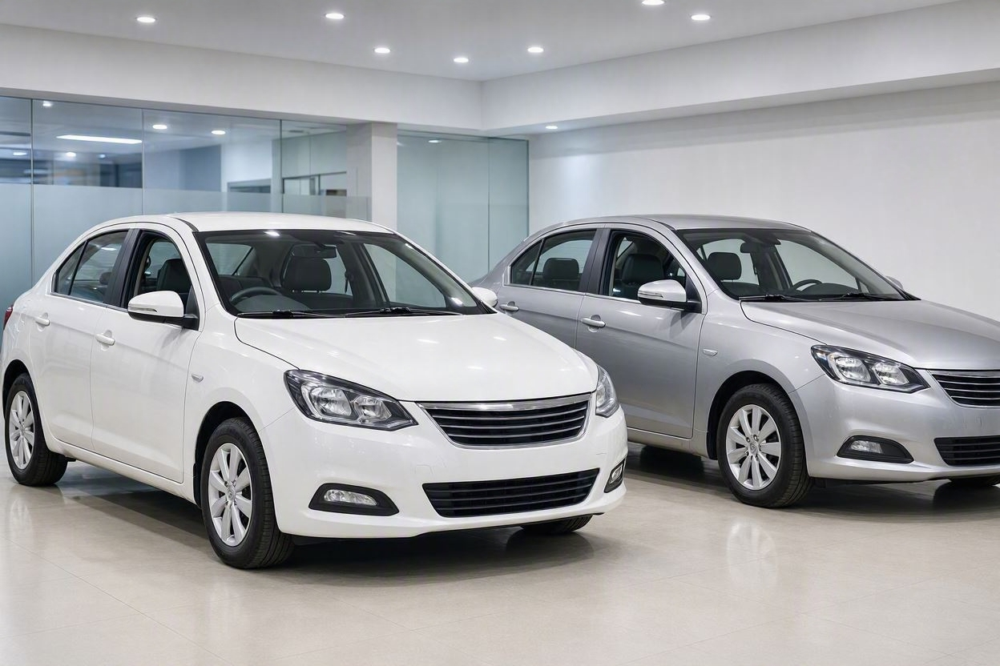
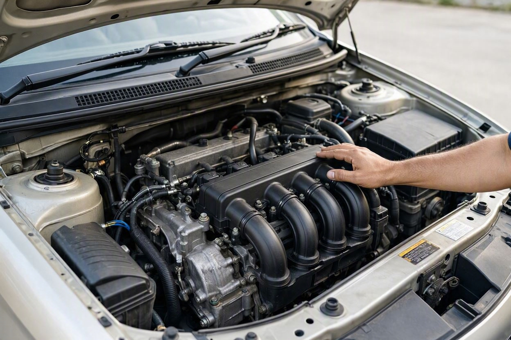
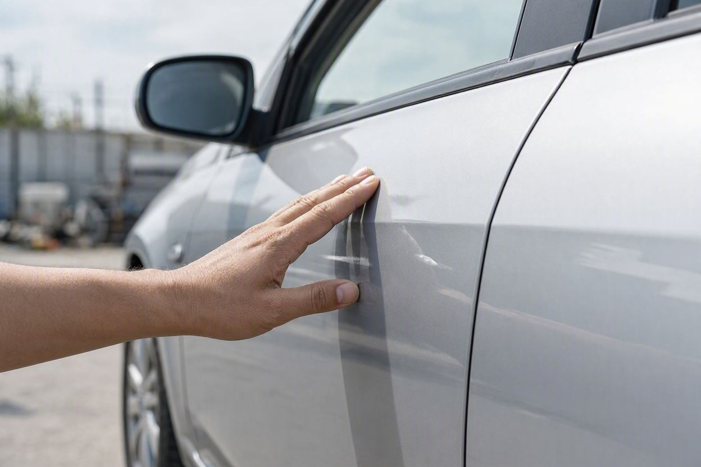
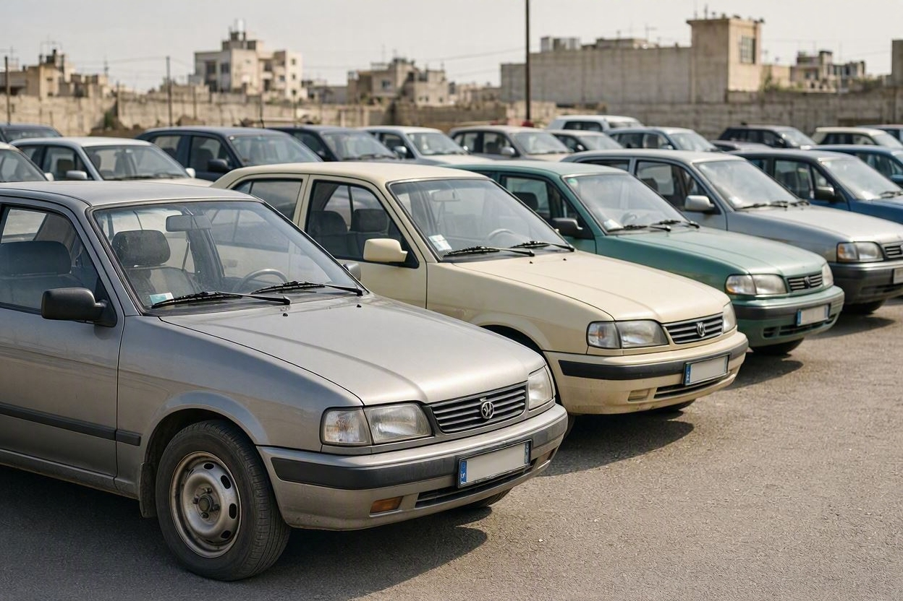

تارا بخریم یا شاهین؟ مقایسه فنی، استهلاک و بازار دست دوم
فرض کنید بودجهتان برای یک سدان نوی ایرانی مشخص است و بین تارا و شاهین ماندهاید. هر دو در یک محدوده قیمتی هستند، هر دو سدان خانوادگی محسوب میشوند، اما وقتی پای موتور، گیربکس، هزینه نگهداری و افت قیمت وسط میآید، تفاوتها خودشان را نشان میدهند. این مقایسه کمک میکند تصمیم را بر اساس واقعیتهای فنی و بازار بگیرید، نه صرفاً ظاهر خودرو.
انتخاب بین تارا و شاهین به اولویت شما بستگی دارد. تارا با پلتفرم و موتور خانواده پژو، حس رانندگی سنگینتر و شبکه قطعات جاافتادهتری دارد و برای کسی که پایداری و تعمیر آسان میخواهد مناسبتر است. شاهین پلتفرم و طراحی داخل بهروزتری دارد و آپشنمحورتر است. از نظر افت قیمت، هر دو مانند اغلب خودروهای داخلی مستهلک میشوند و وضعیت فنی و رنگ خودرو بیش از برند روی قیمت دست دوم اثر میگذارد. برای هرکدام، کارشناسی پیش از خرید ضروری است.
خلاصه در یک دقیقه
- تارا محصول ایرانخودرو و بر پایه خانواده فنی پژو است؛ شاهین محصول سایپا با پلتفرم و طراحی جدیدتر.
- هر دو موتور حدود ۱.۵ تا ۱.۶ لیتری با توان نزدیک به هم دارند؛ تفاوت اصلی در حس رانندگی و نوع گیربکس اتوماتیک است.
- قطعات و شبکه تعمیر تارا به دلیل نزدیکی به خانواده پژو در بازار جاافتادهتر است.
- افت قیمت هر دو خودرو زیاد است و بیشتر تابع نوسان بازار، سلامت فنی و رنگشدگی است تا صرفاً نام برند.
- در بازار دست دوم، خودرویی که سالم و بدون رنگ باشد، فارغ از اینکه تارا است یا شاهین، ارزش معامله بهتری دارد.
تارا و شاهین در یک نگاه
تارا و شاهین هر دو سدانهای نسبتاً جدید بازار ایران هستند که جای خودروهای قدیمیتر را گرفتهاند. تارا را ایرانخودرو تولید میکند و از نظر فنی به خانواده پژو نزدیک است، یعنی همان بستری که سالها در بازار ایران شناختهشده بوده. شاهین محصول سایپا است و روی پلتفرمی جدیدتر با طراحی بدنه و داخل امروزیتر ساخته شده. اگر دنبال یک انتخاب مطمئنتر و کمدردسرتر برای خرید خودرو هستید، شناخت این تفاوتهای پایهای پیش از هر تصمیمی مهم است؛ همان کاری که مجموعهای مثل کارماچک در بررسی خودرو دنبال میکند.
در ظاهر، هر دو خودرو در یک رده قیمتی و کاربری قرار میگیرند: سدان خانوادگی با فضای مناسب و مصرف سوخت متعارف. اما تصمیم درست وقتی گرفته میشود که زیر پوسته ظاهری را ببینید. راستش را بخواهید، خیلی از خریدارها فقط به رنگ بدنه و آپشنهای نمایان نگاه میکنند و از تفاوتهای فنی که در بلندمدت هزینهساز میشوند غافل میمانند.
مقایسه فنی: موتور، گیربکس و رانندگی
هسته اصلی تفاوت این دو خودرو در بخش فنی است. هر دو موتوری در محدوده ۱.۵ تا ۱.۶ لیتر چهارسیلندر با توان تقریباً نزدیک به هم دارند، اما منشأ فنی و حس رانندگیشان فرق میکند.
موتور و انتقال قدرت
تارا از موتور خانوادهای استفاده میکند که سالها روی محصولات مبتنی بر پژو در ایران کار کرده و رفتارش برای مکانیکها شناختهشده است. این یعنی وقتی مشکلی پیش بیاید، تشخیص و تعمیرش معمولاً سادهتر و ارزانتر تمام میشود. شاهین موتوری با طراحی جدیدتر دارد که از نظر کارایی رقابتی است، اما شبکه تعمیر و تجربه انباشته پیرامون آن هنوز به اندازه خانواده پژو گسترده نیست.
در بخش گیربکس، نسخههای اتوماتیک این دو خودرو تجربه رانندگی متفاوتی میسازند. نوع جعبهدنده اتوماتیک روی نرمی شتابگیری، مصرف سوخت و هزینه احتمالی تعمیر در آینده اثر مستقیم دارد. پیش از خرید نسخه اتوماتیک هرکدام، حتماً رفتار گیربکس را در تست رانندگی و در دندههای مختلف بررسی کنید.
حس رانندگی و کیفیت داخل
تارا معمولاً حس فرمان و بدنه سنگینتر و پایدارتری در سرعتهای جادهای منتقل میکند که ریشه در تنظیمات خانواده پژو دارد. شاهین در مقابل روی راحتی سرنشین، طراحی داخل و آپشنهای امروزی تمرکز بیشتری گذاشته است. اینکه کدام برایتان مهمتر است، به سبک استفاده شما بستگی دارد: رانندگی بینشهری و پایداری، یا راحتی و امکانات شهری.

جدول مقایسه سریع
این جدول تفاوتهای کلیدی را در یک نگاه کنار هم میگذارد. ارقام دقیق فنی را از دفترچه رسمی و منابع سازنده تأیید کنید، چون ممکن است بین نسخهها و سالهای ساخت تفاوت داشته باشد.
| معیار | تارا | شاهین |
|---|---|---|
| سازنده | ایرانخودرو | سایپا |
| مبنای فنی | نزدیک به خانواده پژو | پلتفرم جدیدتر سایپا |
| حس رانندگی | سنگینتر و پایدارتر | راحتی و آپشنمحور |
| شبکه قطعات و تعمیر | جاافتادهتر | در حال گسترش |
| گیربکس اتوماتیک | موجود در برخی نسخهها | موجود در برخی نسخهها |
| نکته مهم دست دوم | سلامت فنی و بدنه | سلامت فنی و بدنه |
پیش از معامله، خودرو را بررسی کنید
چه تارا را انتخاب کنید چه شاهین، وضعیت واقعی همان خودروی مشخص مهمتر از مقایسه کلی دو مدل است. بررسی تخصصی میتواند ابهامهای فنی و بدنه را روشن کند.
شروع کارشناسی خودرواستهلاک و افت قیمت
استهلاک یعنی کاهش تدریجی ارزش خودرو در طول زمان و با افزایش کارکرد. برای هر دو خودرو، مثل بیشتر محصولات داخلی، افت قیمت در سالهای اول محسوس است. اما نکته مهم اینجاست که میزان افت بیشتر تابع سه عامل است تا صرفاً نام برند: نوسان کلی بازار خودرو، سلامت فنی خودرو و سابقه رنگ و تصادف.
یک تارا یا شاهین که کارشناسی سالم داشته باشد و بدنهاش بدون رنگ باشد، هنگام فروش با افت کمتری روبهرو میشود. در مقابل، همان مدل اگر رنگشدگی یا تعویض قطعه بدنه داشته باشد، بخش محسوسی از ارزشش را از دست میدهد. به همین دلیل پیش از خرید، بررسی وضعیت بدنه و تأثیر آن بر قیمتگذاری خودرو اهمیت زیادی دارد.
کدام کمتر افت میکند؟
پاسخ قطعی و ثابتی وجود ندارد، چون بازار خودروی ایران نوسان زیادی دارد و رتبهبندی افت قیمت مدلها در بازههای مختلف تغییر میکند. بهجای تکیه بر یک قاعده کلی، برای همان خودروی مشخصی که قصد خریدش را دارید، وضعیت فنی و بدنه را بسنجید. این عامل بیش از انتخاب برند روی قیمت فروش آینده اثر میگذارد.

بازار دست دوم و نکات خرید
در بازار دست دوم، هر دو خودرو خریدار دارند، اما رفتار بازار برایشان کمی متفاوت است. تارا به دلیل نزدیکی فنی به خانواده پژو، اعتماد بخشی از خریدارانی را دارد که با این خانواده آشنا هستند. شاهین با طراحی جدیدتر برای خریدارانی جذاب است که ظاهر و آپشن روزآمد میخواهند. با این حال، در هر دو مورد، آنچه معامله را میسازد وضعیت همان خودروی خاص است.
- مرحله اول:مدارک و سابقه خودرو را بررسی کنید؛ تطابق شماره شاسی و موتور با اسناد پایه هر معامله است.
- مرحله دوم:بدنه را برای رنگشدگی و تعویض قطعه بررسی کنید؛ اختلاف رنگ همیشه با چشم دیده نمیشود.
- مرحله سوم:تست رانندگی کنید و به صدای موتور، رفتار گیربکس و فرمان دقت کنید.
- مرحله چهارم:کارکرد اعلامشده را با فرسودگی واقعی داخل خودرو مقایسه کنید.
- مرحله پنجم:در صورت هر تردید، کارشناسی تخصصی را جایگزین حدس و گمان کنید.
اگر بین چند خودرو مردد هستید، بهجای مقایسه صرف دو مدل روی کاغذ، سلامت واقعی هر گزینه را بسنجید. برای این کار میتوانید پیش از نهاییکردن معامله، رزرو کارشناسی انجام دهید تا وضعیت فنی و بدنه خودرو روشن شود.

کدام را انتخاب کنیم؟
اگر پایداری در جاده، حس رانندگی سنگینتر و دسترسی آسان به قطعات و تعمیر برایتان در اولویت است، تارا انتخاب منطقیتری است. اگر طراحی بهروزتر، راحتی سرنشین و آپشنهای امروزی را ترجیح میدهید، شاهین گزینه مناسبتری خواهد بود. اما در هر دو حالت، یک اصل ثابت میماند: خودروی سالم و بدون ایراد پنهان، از خودروی مدل بالاترِ دارای مشکل بهتر است.
به بیان ساده، تصمیم نهایی را نباید فقط بر اساس مقایسه دو برند گرفت. خودرویی که قصد خریدش را دارید، یک واحد مشخص با تاریخچه خاص خودش است. همین تاریخچه، از کارکرد واقعی تا سابقه تصادف، تفاوت اصلی را در ارزش و هزینههای آینده رقم میزند.
جمعبندی
مقایسه تارا و شاهین نشان میدهد که این دو خودرو در یک رده هستند و هرکدام نقطه قوت خودشان را دارند: تارا در پایداری و شبکه قطعات، شاهین در طراحی و آپشن. اما تفاوت واقعی در تجربه مالکیت، بیشتر از انتخاب برند، به وضعیت فنی و بدنه همان خودروی مشخص برمیگردد. افت قیمت هر دو تابع بازار و سلامت خودرو است، نه یک قاعده ثابت. پیش از هر تصمیمی، سلامت واقعی خودرو را بسنجید تا معاملهای کمریسکتر داشته باشید.
تصمیم مطمئنتر با بررسی تخصصی
پیش از انتخاب بین تارا و شاهین، وضعیت فنی و بدنه همان خودرو را روشن کنید. کارماچک فقط ایراد خودرو را شناسایی نمیکند؛ اثر آن روی هزینه تعمیر و ارزش واقعی معامله را هم مشخص میکند.
ثبت درخواست کارشناسیسؤالات متداول
تارا بهتر است یا شاهین؟
پاسخ ثابتی ندارد. تارا در پایداری رانندگی و دسترسی به قطعات جلوتر است و شاهین در طراحی و آپشن. انتخاب به اولویت شما بستگی دارد، اما در هر دو مورد سلامت فنی و بدنه همان خودروی مشخص از تفاوت برند مهمتر است و باید پیش از خرید بررسی شود.
کدامیک کمتر افت قیمت دارد؟
میزان افت قیمت هر دو بیشتر تابع نوسان بازار، سلامت فنی و سابقه رنگ و تصادف است تا نام برند. خودرویی که کارشناسی سالم و بدنه بدون رنگ داشته باشد، هنگام فروش افت کمتری را تجربه میکند. رتبهبندی ثابت بین دو مدل در بازار پرنوسان ایران قابل اتکا نیست.
هزینه نگهداری کدام کمتر است؟
بهطور کلی، به دلیل نزدیکی تارا به خانواده فنی پژو، قطعات و تعمیر آن در بازار جاافتادهتر است و ممکن است دردسر کمتری داشته باشد. اما هزینه واقعی نگهداری به وضعیت همان خودرو، نحوه رانندگی و کیفیت سرویسهای دورهای بستگی دارد.
برای خرید دست دوم چه چیزی مهمتر است؟
سلامت فنی و بدنه از انتخاب برند مهمتر است. بررسی رنگشدگی، تطابق شماره شاسی و موتور، رفتار گیربکس در تست رانندگی و مقایسه کارکرد اعلامشده با فرسودگی واقعی، پایه یک خرید مطمئن است. در صورت تردید، کارشناسی تخصصی را جایگزین حدس کنید.
گیربکس اتوماتیک این خودروها قابل اعتماد است؟
نسخههای اتوماتیک هر دو خودرو در بازار موجودند، اما رفتار گیربکس را باید در تست رانندگی سنجید. ضربه هنگام تعویض دنده، مکث طولانی یا لرزش میتواند نشانه ایراد باشد. بررسی دقیق گیربکس پیش از خرید، از هزینههای سنگین تعمیر در آینده جلوگیری میکند.
آیا کارشناسی خودرو نو هم لازم است؟
بله، حتی خودروی کمکارکرد یا صفر هم ممکن است ایراد بدنه ناشی از حملونقل یا مشکل فنی داشته باشد. کارشناسی پیش از خرید، وضعیت واقعی خودرو را روشن میکند و از تصمیم بر اساس ظاهر جلوگیری میکند. این بررسی برای هر دو مدل تارا و شاهین توصیه میشود.